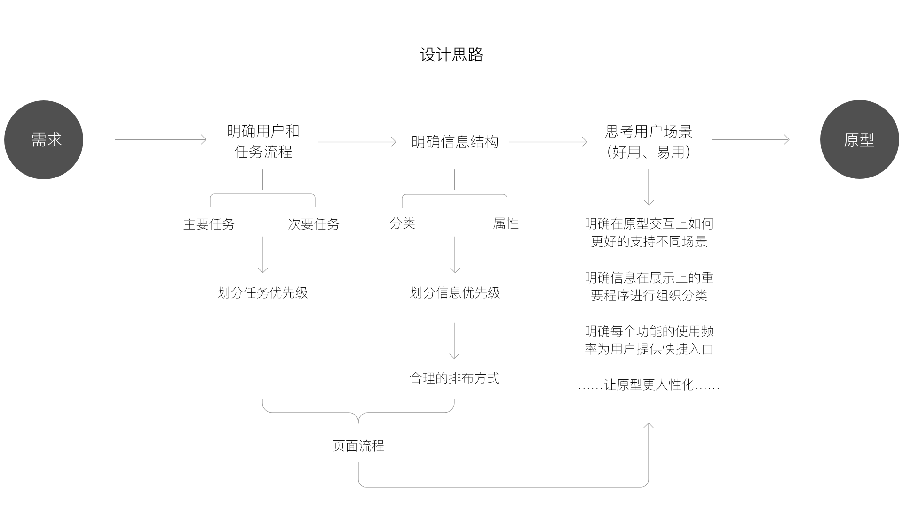

很多产品新人，一般都习惯整理好需求之后直接动手画原型，在画原型的过程中再不断的回过头看需求，然后对原型进行修改或增添内容，偶然还要为某个突然想起的需求点在原型上不断打补丁。在这样一种没有严谨思路的情况下，制作出来的原型图不仅容易遗漏数据或功能，更重要的是很容易没有清晰的系统逻辑性和结构性，这样的原型无论是对于开发人员还是最终的用户都是很令人头疼的事情。
也许，出现这种情况的原因与产品经理所要求的产出物有关：产品需求文档 和 产品原型图（没有专业的交互设计师来完成的情况），所以造成了产品新人惯性的思维，完成需求文档之后，马上就去制作原型图，这是个误区。其实需求和原型之间还隔着一堵墙，如果很生硬的翻墙而过必然会造成一定的损伤，我们只有通过一定的手段把这堵墙一砖一瓦的拆解掉，才能从需求顺畅的过渡到原型，设计出的拥有行云流水般体验的产品。

拆解需求和原型之间这堵墙的过程，我们可以称之为设计规划，这个过程虽然没有很必要的产出物，但其实无论是在我们的脑海中还是借助一些工具表达，都是需要我们经过深思熟虑、不断对比取舍，对产品设计形成一个严谨的系统性的规划方案，然后最终只是把成熟的方案通过原型图表现出来而已。
那设计规划的过程具体有哪些手段呢，我感觉可以总结为两个步骤、一个思想。两个步骤分别是：组织信息结构、设定任务流程；一个思想是说要时刻通过思考用户场景的手段，来帮助自己更好的融合以上两个步骤的成果，从而制作出优秀的交互原型。
首先说第一个步骤——组织信息结构。所有的产品必然都对应的着实体对象，而每一个实体对象必然又对应着不同分类或属性。比如谷歌搜索对应的实体对象可以看为是一个个的搜索结果，而搜索结果有网页、图片、视频等各种分类，同时图片等搜索结果也可以看成是一个实体对象，对应着图片格式、分辨率等不同的字段属性。组织信息结构就是需要将这些实体对象以及对应的分类属性进行系统的组织、划分、归类，从而对产品的所有涉及到的元素有个统筹的认知。
以在线购买电影票产品为例，最重要的两个实体对象就是电影和电影院。其中电影按照上映状态可以分为正在热映和即将上映两类（因为是购票类应用，所以排除了那些历史电影），然后每个影片都对应着不同的属性值，包括：电影名称、类型、评分、上映时间、导演、演员、剧情、剧照、预告片、用户评论等等；电影院则可以按照地理位置行政区进行划分、或按照影院品牌等分类方式划分，每个电影院同样可以包含不同的属性值：影院名称、具体地理位置、联系电话、评分、用户评论、距离用户距离等等；然后影片和电影院一一对应后，就会有场次时间、价格、座位选择情况等等信息。
我们首先要对所有这些产品中可能要呈现出的信息进行分析组织，然后要进一步从产品全局的角度进行考量，通过信息重要性等因素出发，进行分类规划则可以初步形成整个产品的导航结构。这个步骤的产出物可以是信息E-R图或者思维导图，不仅能帮助我们整理思路，同时也可以作为文档中很好的沟通资料。
然后是第二个步骤——设定任务流程。用户使用任何产品肯定都是抱着一个目的而来，而为了达到这个目的用户都需要按照产品设定流程采取一系列的动作来不断趋近最终想要的结果。比如用户想到淘宝中买一双跑步鞋，他首先需要打开淘宝页面，然后在搜索栏中输入“跑步鞋”点击搜索，可能会通过选定品牌、尺码等条件进一步筛选，接下来就是一个个查看搜索结果，直到找到喜欢的一双鞋加入购物车，最后就是填写收货地址，确认下单后付款。设定任务流程就是需要将不同的静态信息内容用一条条线串联起来，引导用户无障碍的来实现他们的最终目的。“无障碍”是最基本的要求，强调的是任务可完成，不能设计成一个迷宫一样，用户像个无头苍蝇一样不知道下一步该如何做，所以设定一个无障碍的任务流程也是画原型图之前非常重要的一个步骤。
同样以购买电影票整个流程为例。用户涉及到的任务可能是这样一个流程：选择影片->选择电影院->选择场次->选择座位->确定手机号->确认订单->付款。其中每个任务可能还包含着一些子任务，比如选择影片时用户可能希望能查看影片简介或者查看用户发表的影评等等；选择电影院时可能需要通过行政区县进行筛选、查看影院是否提供停车服务等等。
每个任务都有不同的优先级，可以从潜在用户数、使用频率、重要程度三个维度进行综合考虑。通过梳理产品中包含的任务流程以及主要任务和次要任务的区分，可以明确业务流程，加上第一个步骤梳理的信息结构，进一步可以得出页面流程（跳转逻辑）。可以看到这个步骤的产出物就是业务流程图以及大致的页面流程，从某个角度来看也就是通过一个个的用例将需求、信息、页面串联起来，其中用例所区分的概要层、用户层也就是对应着主任务、子任务。
有了以上两个步骤的准备，我们则可以进入到原型设计阶段。我们先看一下截止目前都做了哪些工作：
· 组织信息结构——让我们对产品中包含的元素有了清楚的认识并且形成了严谨的结构，在此基础上进一步可以形成初步的导航体系；
· 设定任务流程——让我们从每一条任务线出发，将用户行为按照次序有逻辑的串联了起来；
基于此，制作原型就是将成熟的思考内容，即将这两个步骤的成果融合在一起，用界面形式表达出来而已：信息结构+任务流程=交互原型。在画原型的过程中，我们要时刻牢记一个思想——思考用户场景。
站在用户的角度去考虑，可能会在什么场景下使用我们的产品，能够让我们明确在原型交互上如何更好的支持不同场景。比如买电影票时主要存在两种场景：一种是先选择电影然后再选择电影院；另一种可能是先确定电影院再挑选该影院上映的影片。那在产品的信息结构中就很有必要将「影片」「电影院」这两个实体对象放置于应用中（无论是appbar tab，还是bottom tab）平级对立的两个位置。
站在用户的角度去考虑，在完成任务的流程过程中哪些信息是非常重要的，能够让我们明确信息在展示上的重要程度来进行组织分类。比如在选择电影院时，电影名称、地址、以及上映的影片和场次对购票用户来说是比较重要的信息，而该电影院评价、联系电话等其它属性信息则是相对无关紧要的信息，那么则可以把这些信息归集到深一层页面进行展示。
站在用户的角度去考虑，我最常用的功能可能是哪些？能够让我们明确哪些功能可能需要提供快捷入口。比如电商类的应用，在浏览商品的时候随时都有可能需要快速到购物车页面，那么提供一个购物车的快速通道是再好不过的了。
时刻思考用户场景，能最大程度上让制作的原型更具人性化，人性化的另一层含义就是更好用。当然，站在用户场景下能帮助我们考虑的问题不止以上提到的三点，还可以有很多细节的层面，主要的是要养成这样一种习惯，但是要注意不能钻入到自己主观的用户想法中不能自拔，否则很容易设计出“只有你以为很好用的交互功能”。
本篇文章主要探讨了一下在需求和原型之间，我们到底有哪些工作需要做，而不是上来就一头扎到原型图中。当我们在设计规范阶段思考的足够多足够详细，画原型就成很了很轻松很高效的一项内容。
需求到功能的设计，如何规划原型？https://www.pmcaff.com/discuss/index/703420595399744?pmc_param=1